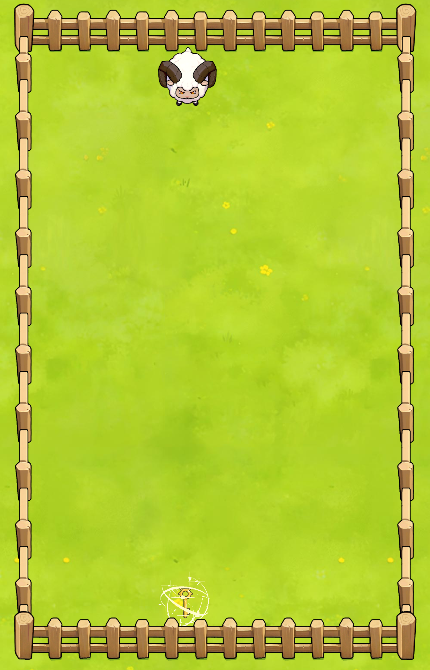
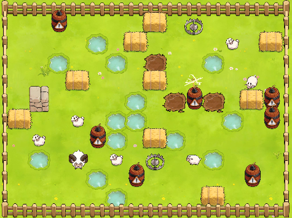
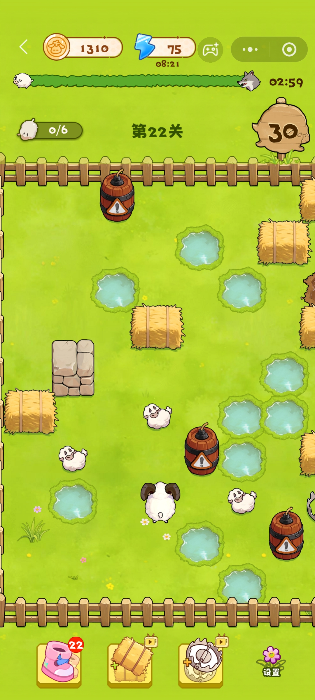

01 / CASE OVERVIEW
概述
我负责本项目的关卡设计、关卡配置与实机检查。早期关卡主要在固定矩形地图尺寸上等比扩展面积，但更大的地图并没有带来更有趣的选择：介于手机显示范围，玩家在大地图的画面中只能看到局部区域，难以判断下一步会到达哪里，关卡容易变成连续盲试。
重构时，我将重点从“唯一解法”转向“让玩家能够观察、预判并规划路线”。新版关卡尝试围绕清晰的地图结构、可辨认的图案、障碍物特性和动态追逐压力展开。
旧版与新版地图对比


